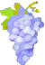

O que são alimentos funcionais e para que servem?
Alimentos Funcionais são alimentos que contém substâncias capazes de produzir efeitos protetores e de defesa dentro do organismo contra fatores oxidantes e inflamatórios gerado dentro do copo por diversos fatores externos como a exposição à poluição, a adição dos corantes e conservantes de alimentos industrializados, a cultura de produção de alimentos convencionais (com uso de agrotóxicos), as desordens alimentares como o baixo consumo de frutas, verduras e legumes, alto consumo de carboidratos refinados como pães, bolos, doces e massas, assim como alto consumo de açúcar, adoçantes químicos, temperos industrializados, consumo exagerado de alimentos fritos, embutidos e industrializados, o fumo, o uso de bebida alcoólica, os medicamentos, entre outros. Com tantos fatores deletérios à saúde e, normalmente, presente na rotina da maior parte das pessoas, os alimentos funcionais por possuírem efeitos antioxidantes e antiinflamatórios podem auxiliar na redução de risco ou na prevenção de doenças como o câncer, hipertensão, doenças do coração, diabetes, doenças auto- imune e outras.Os alimentos com ação mais antiinflamatória e antioxidante são as frutas, os legumes, verduras e ervas aromáticas de maneira geral, mas de forma geral alguns podem ser destacados:
Peixes: ricos em ácido graxo ômega 3, como um potente anti- inflamatório, pode melhorar o perfil lipídico, ou seja, diminuir o colesterol ruim e aumentar o colesterol bom, e reduzir a pressão arterial, quando associados à vitaminas e minerais antioxidantes. Melhores fontes: peixes selvagens de água fria, como salmão, truta, bacalhau e sardinha.
Linhaça: semente rica em ômega 3, 6 e 9 e de uma fibra vegetal insolúvel, a lignana, promove proteção de doenças do coração.
Alho: Contém inúmeras substâncias com propriedades funcionais, conferindo-lhe propriedades para a diminuição da pressão arterial, redução do açúcar do sangue (glicemia – diabetes), melhora função de defesa do organismo conta vírus e bactérias, tem ação na prevenção de inúmeros cânceres e na redução de fungos intestinais.
Cogumelos: alimento rico em fibras e proteína de alto valor biológico e com teor reduzido de gorduras, este alimento possui propriedades funcionais melhorando os níveis de colesterol sangüíneo, além de propriedades anti-tumorais. As espécies shitake e shimeji são as mais estudadas.
Chá verde: A erva Camellia sinensis, quando não sofre fermentação, mantém um maior teor de catequinas, além de outros polifenóis com ação antioxidante, colaborando na prevenção de doenças crônico-degenerativas, como doenças do coração, diabetes, câncer, demência e Alzheimer dentre outras. Auxilia no emagrecimento, pois diminui a inflamação.

Uvas e frutas vermelhas (berris): Ricas em flavonóides e resveratrol, essas frutas são importante na saúde cardiovascular, melhorando o perfil de lipídios, ou seja, diminuindo a fração do colesterol ruim (LDL- colesterol) no sangue e diminuindo o risco da formação de placas de gordura nas artérias e ataques do coração.
Vegetais verdes escuros (brássicas): As brásicas como: brócolis, repolho, couve flor, couve de bruxelas, mostarda, agrião, rúcula e outras são ricas em inóis que agem como antioxidante e antiinflamatório sendo importantes para a prevenção de inúmeros tipos de câncer. Além de serem muito importantes para que o organismo faça a desintoxicação dos medicamentos, corantes e conservantes alimentares, agrotóxicos, etc.
Açafrão: Fonte de curcimina, o açafrão é uma erva aromática com mais ações antioxidantes e antiinflamatórias conhecidas. Age na prevenção de doenças crônicas degenerativas, câncer, tem ação protetora do coração, diminui o colesrterol ruim e aumenta o bom colesterol, melhora a imunidade do organismo e é importante para o bom funcionamento do estômago e do fígado. Para manter uma boa saúde é muito importante manter uma ingestão regular e variada dos alimentos antiinflamatórios e antioxidantes e lembrar-se de variar os mesmos, pois cada alimento tem suas características protetoras específicas e que agem de maneira diferente no organismo.
|